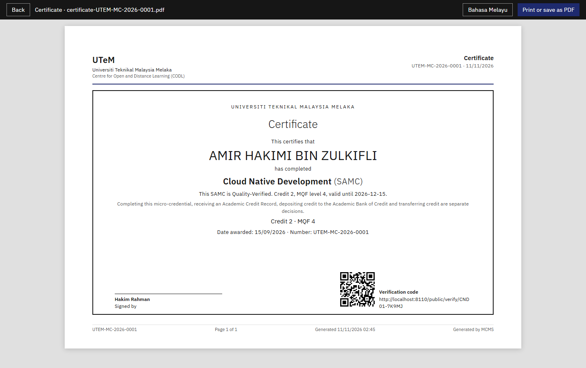
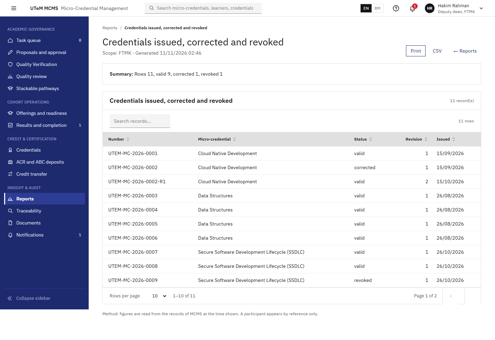

Every download, print or export in MCMS opens a document laid out on A4 pages, which the user can print or save as PDF. Where a machine-readable file is needed, the document also offers a real download. Each page has a header with the UTeM name, the document title, reference and date, and a footer with the reference, page number, generation time and "Generated by MCMS". Following D-58 and D-59, official A4 printouts apply the Carbon print hierarchy (4-column summary KPI strip, cool-gray #f2f4f8 field label cells separated from crisp white #ffffff filled data values, solid uLearn Navy #1e2a6e [F1]–[F11] section badges, and high-contrast CSS checkboxes) and render strictly in the single language selected by the user's top-bar EN | BM toggle—without inline English / Bahasa Melayu slash labels. No identity number, email or marks appear on public verification slips that leave UTeM.
Printable documents

/my-credentials/{id}/certificate; full DOC-01 to DOC-17 prints in Appendix C).